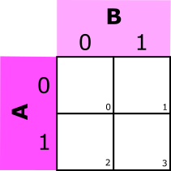
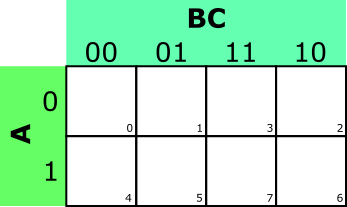
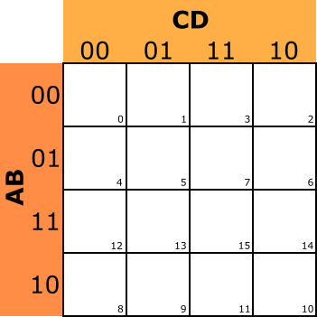
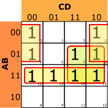

APÉNDICE II: método de Karnaugh de simplificación de funciones lógicas.
Cuando las funciones lógicas tienen una expresión grande, el procedimiento algebraico nos puede llevar a cometer errores, porque se convierte en algo pesado. Se utiliza entonces el procedimiento de los diagramas o mapas de Karnaugh.
| MAPAS DE KARNAUGH PARA DOS, TRES Y CUATRO VARIABLES | ||
| 2 VARIABLES | 3 VARIABLES | 4 VARIABLES |
|  |  |  |
Se numera cada celda con el número decimal correspondiente al término binario que contiene, para facilitar el trabajo a la hora de colocar la función. Para simplificar una función lógica por el método de Karnaugh se seguirán los siguientes pasos:
1º) Se coloca un 1 en los cuadros correspondientes a los términos minitérminos iguales a 1 (consulta el apéndice I).
2º) Se agrupan mediante lazos los unos de casillas adyacentes siguiendo estrictamente las siguientes reglas:
a) Dos casillas son adyacentes cuando se diferencian únicamente en el estado de una sola variable (¡OJO!: las de los extremos son adyacentes, ya que puedes imaginar que el diagrama es flexible y se "enrolla" sobre sí mismo)
b) Cada lazo debe contener el mayor número de unos posible, siempre que dicho número sea potencia de dos (1, 2, 4, etc.)
c) Los lazos pueden quedar superpuestos y no importa que haya cuadrículas que pertenezcan a dos o más lazos diferentes.
d) Se debe tratar de conseguir el menor número de lazos con el mayor número de unos posible.
3º) Cada término simplificado se obtiene eliminando la o las variables que cambien de estado en el mismo lazo.
4º) La forma simplificada de la función tendrá tantos términos como lazos posea el diagrama, y dichos términos estarán sumados.
Vamos a ver todo el proceso con una función que nos sirve de ejemplo:

A continuación, escribimos el cuadrado de 16 casillas (24).
Una vez hecho esto, en las casillas que corresponda hay que poner los “1” de la función F. Así, la primera combinación que hace que la función F valga uno es precisamente la 0000 (correspondiente al 0 decimal), por lo que en la casilla numerada con el cero decimal habrá que colocar un uno (como valor de la función). Sucede esto también con las casillas numeradas con 2, 4, 6, 7, 12, 13, 14 y 15.
El siguiente paso es intentar hacer lazos de 8, 4, 2 ó 1 “1” que estén adyacentes. Para eso, te puedes imaginar que el cuadrado es flexible y que, enrollándolo sobre sí mismo, tocaría el lado izquierdo con el derecho, o la parte superior con la parte inferior.
Como es evidente, no encontramos ningún lazo que contenga ocho “1” adyacentes.
Pasamos, entonces, a buscar lazos de cuatro “1”. Encontramos uno formado por las casillas 12, 13, 14 y 15. Tenemos otro formado por las casillas 6, 7, 14 y 15 (no importa que haya casillas que ya hayan entrado en otro lazo: buscamos siempre el más grande posible).
Por último, encontramos el lazo formado por las casillas 0, 2, 4 y 6, que son adyacentes por lo de la "flexibilidad" del diagrama.
Pasamos a buscar lazos de dos “1”, y no encontramos. Tampoco encontramos lazos que contengan “1” aislados. Por tanto, ya habremos terminado.
Así pues, los lazos que hemos localizado son:
{12,13,14,15} {6, 7, 14, 15} {0, 2, 4, 6}
Ahora llega el momento de escribir los términos de la función simplificada. Como hay tres grupos, la función simplificada tendrá tres términos.
Los términos de 4 (22) “1” van a contener 2 variables. Los términos de 2 ( 21) “1” contienen 3 variables. Los términos con un único “1” contienen las cuatro variables.
Hay que tener en cuenta que, dentro de un lazo, la variable que cambie de valor, desaparecerá del grupo de cuatro variables. Así pues:
En el grupo {6, 7, 14, 15}, cambian de valor A y D, que se eliminan, y el término correspondiente debe escribirse B·C, dado que A y B valen 1 dentro de ese lazo.
En el grupo {12, 13, 14, 15}, cambian de valor C y D, que deben eliminarse, y el término correspondiente puede escribirse A·B, porque A y B valen 1 dentro del lazo.
En el grupo {0, 2, 4, 6} las variables que cambian de valor son B y C, que deben eliminarse. Entonces, el término correspondiente puede escribirse . Las variables A y D aparecen negada porque dentro del lazo, su valor es cero.
Por tanto, la función puede escribirse entonces como:

Un dato importante es que esta función tiene una expresión más reducida que la de partida, lo que quiere decir que esta última no estaba simplificada del todo, como sí lo está la expresión que hemos obtenido, ya que eso es lo que nos garantiza el procedimiento de Karnaugh.
Obra publicada con Licencia Creative Commons Reconocimiento No comercial Compartir igual 4.0